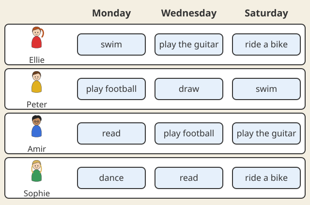

Was machst du gern? Hobbys und Haustiere
Mit einem KI-Tutor lernen
Ein KI-Tutor erklärt dir diese Seite und hilft dir bei den Aufgaben. Wähl deinen Assistenten:
Mit Claude öffnen Mit ChatGPT öffnen Mit Mistral Vibe öffnen
Du nutzt dein eigenes Konto beim Anbieter. Der Assistent ist kein Angebot von lernapps.net: lernapps liefert nur Inhalte und Aufgaben. Die Wahl gilt für alle Seiten, nur auf diesem Gerät.
Wer macht was an welchem Tag?

Der Wochenplan an Ellies Zimmertür. Von oben: Ellie (roter Pferdeschwanz), Peter (gelbe Jacke), Amir (Brille) und Sophie (Zöpfe).
Quelle: eigene Zeichnung. Lizenz: CC-BY-4.0.Ellie hat einen Wochenplan an ihre Tür gehängt: Jeder hat Hobbys (hobbies), das sind Dinge, die man gern in der Freizeit (free time) macht. Sophie will ihren Eltern schreiben, was die Kinder machen.
Aufgabe
Lösung
Amir richtige Antwort
In der Zeile von Amir steht unter Wednesday play football.
Peter
Peter spielt am Montag Fußball. Am Mittwoch zeichnet er.
Sophie
Sophie liest am Mittwoch. Fußball steht nicht in ihrer Zeile.
Zeile von Amir, Spalte Wednesday.
Mehr dazu: Lernlandkarte Englisch · Hobbys, Haustiere und Freizeit
Das kannst du danach: Du sagst, was du gern machst, welche Haustiere du hast und was du am Wochenende tust.
Hobbys, Haustiere und Freizeit
Ein Hobby nennst du mit einem Verb: swim, read, draw, dance, ride a bike. Bei play kommt es darauf an: Ein Spiel steht ohne the (play tennis), ein Instrument mit the (play the piano). Haustiere (pets) sind zum Beispiel a dog oder a horse. Du sagst: I have got a dog.
| Ausdruck | Bedeutung |
|---|---|
| basketball | Basketball |
| violin | Geige |
| parrot | Papagei |
| hiking | Wandern |
| at the weekend | am Wochenende |
Was magst du? I like, I love (ich liebe) und I enjoy (es macht mir Spaß) sagen, wie sehr dir ein Hobby gefällt. Danach kommt das Verb mit -ing: I like cooking. Bei dance fällt das e weg (dancing), bei sit und get kommt ein Buchstabe dazu (sitting, getting). Bei he, she, it hat like ein -s: she likes. Viele Sportarten sagst du mit go und -ing: go hiking.
Merke
Gern machen: like, love, enjoy + Verb mit -ing: She enjoys singing. Spielen: play + Spiel (play tennis), play the + Instrument (play the piano). Gehen: go + -ing (go hiking), nie go to + -ing. Wann: on Saturday, at the weekend. Fragen: Do you like cooking? Yes, I do. No, I don't.
Übung
Aufgabe
Lösung
Richtige Antwort: Es lebt im Wasser. – a fish; Es hat lange Ohren und hüpft. – a rabbit; Es kann fliegen und sprechen lernen. – a parrot; Es läuft nachts in seinem Rad. – a hamster
Jedes Tier passt zu seiner Eigenschaft.
Mehr dazu: Lernlandkarte Englisch · Hobbys, Haustiere und Freizeit
Aufgabe
Schreibe den ganzen Satz.
Tipp
Denk an die Endung des zweiten Verbs.
- Amir · like · play · football
- I · go · run · at the weekend
- we · play · the violin
Lösung
- Amir likes playing football.
- I go running at the weekend. (auch richtig: At the weekend I go running.)
- We play the violin.
Aufgabe
Schreibe den Satz auf Englisch.
- Ich spiele am Samstag Basketball.
- Ich habe eine Katze.
- Ich schwimme gern.
Lösung
- I play basketball on Saturday. (auch richtig: On Saturday I play basketball.; I play basketball on Saturdays.; On Saturdays I play basketball.)
- I have got a cat. (auch richtig: I've got a cat.; I have a cat.)
- I like swimming. (auch richtig: I love swimming.; I enjoy swimming.)
Aufgabe
In jedem Satz steckt ein Fehler. Schreibe den Satz richtig.
Tipp
Lies jeden Satz langsam. Welches Wort fehlt oder passt nicht?
- He like football.
- I play swimming on Monday.
- I play guitar on Saturday.
Lösung
- He likes playing football. (auch richtig: He likes football.)
- I go swimming on Monday.
- I play the guitar on Saturday.
Aufgabe
Hör zu und schreibe, was du hörst.
- KI
- KI
- KI
Lösung
- My cousin plays tennis with Sophie.
- My friends enjoy dancing with Amir.
- Do you like playing games with Peter?
Selbst sagen und schreiben
Aufgabe
Hör zu, sprich nach und nimm dich auf. Vergleiche dann mit dem Original.
Tipp
Hör den Satz zuerst. Sprich dann langsam nach.
- I love reading books with Ellie.KI
- A cat sleeps on the sofa.KI
- What do you do at the weekend?KI
Zum Aufnehmen braucht diese Aufgabe JavaScript. Die Beispiele kannst du auch ohne anhören.
Lösung
- I love reading books with Ellie.
- A cat sleeps on the sofa.
- What do you do at the weekend?
Ellie hat ihre Zeile für „Hobbys“ geschrieben. Schau, wie sie es macht.
| Was | Englisch |
|---|---|
| Was mache ich gern? | I like swimming and I play the guitar. |
| Wann? | I swim on Monday. I ride my bike on Saturday. |
| Hast du ein Haustier? | No, I haven't got a pet. I like rabbits. |
Offene Aufgabe
Schreibe die nächste Zeile deines Profils „All about me“ in dein Heft: Was machst du gern? Hast du ein Haustier oder wünschst du dir eines? Schreibe zwei bis vier Sätze. Die App bewertet deinen Text nicht: Vergleiche ihn danach selbst mit den Punkten.
Eine gute Antwort enthält:
- Ein Satz sagt mit like, love oder enjoy und einem Verb mit -ing, was du gern machst. Nachlesen
- Ein Satz sagt, was du wann machst (on Saturday, at the weekend). Nachlesen
- Ein Satz nennt ein Haustier mit have got, oder du schreibst, dass du keins hast. Nachlesen
- Es sind ganze Sätze mit einem Punkt am Ende. (Form)
Lösung
I like drawing and I enjoy reading. I read on Wednesday. I have got a rabbit.
Oder: I love playing football. I play at the weekend. I haven't got a pet.
Wie es weitergeht
Sophie schreibt nach Hause: „Ellie schwimmt, Peter zeichnet und Amir spielt Fußball. Hier hat jeder ein Hobby!“ Am nächsten Tag bringt Amir eine Einladung zu seiner Geburtstagsparty mit, und Sophie schreibt ihre Antwort.